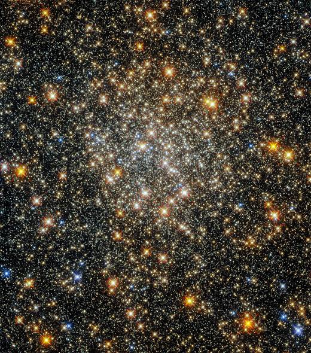

Clouds & landmarks
Pale starlight, small points, and a few bright landmarks.
Your selected direction, refined against the star-cluster reference.

The new color referenceIvory, pale gold & blue ↗
Ivory and warm white dominate; pale gold, blue, and peach add variation. Small stars are plentiful; large landmarks are rare.
Previous file-type system · size comparison
Objects & magnitudes
Same file seed across each row · click an object for detail
A neighborhood
Intermixed fictional files. Scroll to zoom, drag to pan, or click a star. Clouds follow fixed members of three fictional series; this review does not calculate file similarity.
Stable meaning
Byte sizes shape ordinary stars; only favorites get pulsars or black holes. Adding files never creates new favorites. All file positions stay fixed.
Bytes → bounded presence
Mostly fine points, some medium stars, and a few bright outliers. A fixed, curved byte scale widens the size range without letting large files cover their neighbors.
A review, not a benchmark
Artwork is generated once into a bounded sprite cache, then drawn on demand. This prototype demonstrates the aesthetic; foreground frame timing in the real atlas is still required.